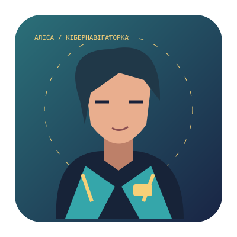

ТВОЇ ЗНАННЯ — ТВОЯ СУПЕРСИЛА
Твій наступний
вимір пригод.
Команда «Вектор» шукає тих, хто мислить сміливо. Досліджуй дроби, керуй пропорціями й прокладай маршрути на координатній площині.
Аліса знаходить шлях навіть там, де карта обривається.